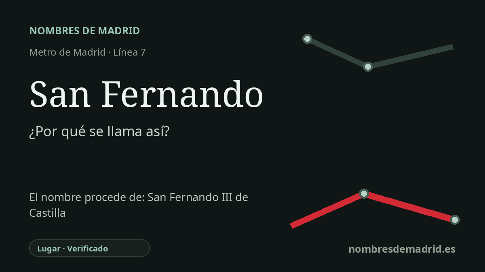

Publicado el · Investigación de Nombres de Madrid · Cómo verificamos cada origen · 6 fuentes consultadas
Respuesta rápida
La estación de San Fernando toma su nombre del municipio de San Fernando de Henares, donde se encuentra. El nombre de la localidad procede del Real Sitio del siglo XVIII impulsado bajo Fernando VI y remite en último término a San Fernando III, con Henares añadido como referencia fluvial en 1916.
La historia del nombre
El nombre de la estación es local antes que devocional. San Fernando, en la línea 7, está en el municipio de San Fernando de Henares, y su denominación identifica la localidad a la que sirve, no una iglesia, santuario o calle aislada.
Detrás de ese topónimo municipal hay un proyecto regio del siglo XVIII. En 1746, el lugar de Torrejón de la Ribera fue incorporado a la Corona para establecer una fábrica real de paños. Bajo Fernando VI, la fábrica, las viviendas de los trabajadores y las plazas planificadas dieron origen al Real Sitio de San Fernando, un experimento industrial y urbano de la Ilustración borbónica.
La palabra Fernando apunta en dos direcciones a la vez. Recuerda a Fernando VI, el monarca vinculado a la fundación, pero la forma religiosa San Fernando remite al santo de su onomástica: Fernando III de Castilla y León, el rey medieval conocido como el Santo. El culto de Fernando III fue extendido formalmente en 1671, lo que ayuda a explicar que su nombre funcionara en el siglo XVIII como referencia regia y devocional de prestigio.
La estación está además muy cerca de la historia fundacional. Las descripciones de la estación la sitúan en el casco histórico, junto al ámbito de la antigua Real Fábrica de Paños; la documentación de transporte de la línea 7B recoge la prolongación de 2003-2007 hacia Coslada y San Fernando de Henares, y la página de ampliaciones de Metro de la Comunidad de Madrid identifica la prolongación Las Musas-Coslada-San Fernando de Henares como MetroEste.
El elemento Henares es posterior y algo problemático desde el punto de vista histórico. El Ayuntamiento documenta que en 1916 el pueblo pasó de llamarse San Fernando de Jarama a San Fernando de Henares, aunque el Jarama es el río más ligado al emplazamiento original. En la explicación pública, la formulación más segura es que la estación toma el nombre del municipio, cuyo topónimo combina un San Fernando regio-devocional con la designación fluvial posterior Henares.